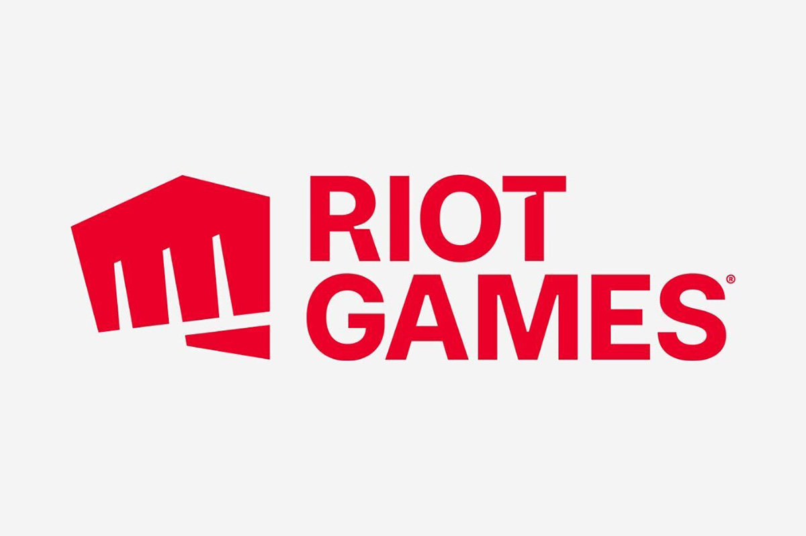

Компания Riot Games была основана в 2006 году и с тех пор разрабатывает, издает и поддерживает игры, максимально ориентированные на пользователей. В 2009 мы выпустили первый проект под названием League of Legends, который быстро завоевал всемирное признание. С тех пор Лига стала самой популярной компьютерной игрой в мире и способствовала взрывному росту киберспорта.
Лиге уже больше 10 лет, и мы продолжаем развивать свою первую игру, а также работаем над новыми проектами: Teamfight Tactics, Legends of Runeterra, VALORANT, League of Legends: Wild Rift и рядом других. Кроме того, издательство Riot Forge помогает разработчикам создавать новые приключения во вселенной Riot – такие как Ruined King. Рунтерра оживает в самых разных произведениях: это и музыка, и комиксы, и настольные игры, и анимационный сериал "Аркейн", получивший премию "Эмми".
В ежегодном Чемпионате мира по League of Legends принимает участие 12 команд из разных лиг со всего света, отобранных по результатам предыдущих игр. Турнир входит в число самых масштабных и популярных спортивных и игровых мероприятий в мире, а в области киберспорта сохраняет первенство по количеству зрителей.